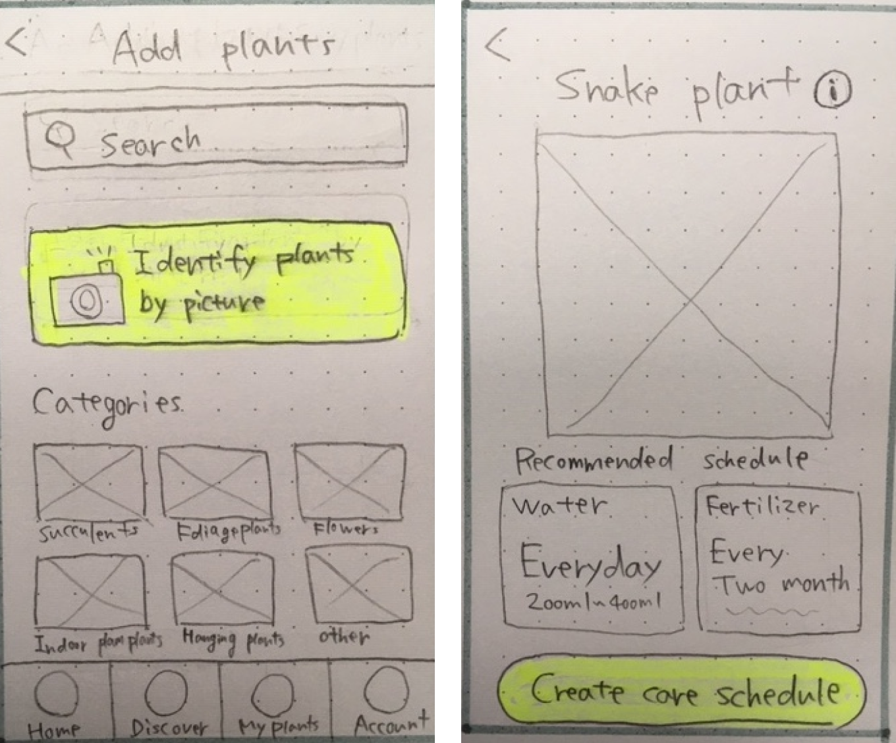

Designing a personal assistant app which helps novice plant owners better understand plant care and gain confidence in their abilities.
Project background: In a UX/UI Design Bootcamp, we had a design challenge project
to design a digital product to solve daily problems people face.
Project type: Group project / Team of 4
Timeline: 4 weeks
My role: UX researcher, UX/UI designer
My responsibilities: UX research, Storyboarding, UI design, Wireframing,
Prototyping, User testing
Tool used: Miro, Figma, Invision
The problem: Due to the pandemic, people are spending more time in their homes,
creating an increased interest in caring for plants. However, with an increase of novice plant
owners, there is a gap in their knowledge and understanding of plants. Therefore, they are facing
challenges in keeping their plants alive.
The solution: Eva is a personal assistant app which helps novice plant owners
better understand plant care and gain confidence in their abilities.
We started our project by conducting a survey of 59 people and 6 interviews and synthesized the research data into an affinity diagram. Our research objectives were identifying plant owners, understanding their current plant knowledge and the challenges they face.
Affinity diagram
Key findings we discovered:
Novice plant owners don’t have confidence in caring for new plants,
and it stops them from expanding their plant collection beyond no-care-required
plants.
Their low confidence stems from their past experiences of killing
plants due to a lack of proper plant care knowledge
and forgetting to water plants.
The biggest challenge they face is not knowing the proper sunlight amount and how much water is needed for each plant.
Who are our users? What is the problem?
Based on the analyzed research data, we created our user persona, user insight statement, and problem statement. Those helped up to align our team’s understanding of the problem and target users, and worked as guiding principles throughout the design process.
User persona
User insight statement
“Sabrina Chowdhury, a novice plant owner, needs help caring for her new plants as she expands
her collection, because they have become instrumental in creating a calming atmosphere in her
home, and successfully caring for them improves her sense of well-being.”
Problem statement
“From our research we discovered that novice plant owners have developed an interest in
expanding their current plant collections, however they are hesitant to buy new plants
because they are unsure if they can successfully care for them.
How might we help novice plant owners understand plant care and take care of their plants so
that they gain confidence in their own abilities?”
How are we going to solve the problems?
Brainstorming
Feature prioritization matrix
Determined main features:
Personalized care schedule & reminders
Detailed care guide and specific instruction
Plant identification and information
After defining the main features of the app, I created a storyboard to clarify the flow of users' interactions with the app.
Storyboard
Before designing a final product, I started prototyping by sketching wireframes on paper. After brainstorming and sketching iterations, I created middle-fidelity digital wireframes and a prototype to test it with users.
Paper wireframes
Discover new plants
Create a care schedule
Middle-fidelity digital wireframes
Discover new plants
Create a care schedule
2 rounds of user testing
Two rounds of user testing were conducted to find usability issues, and we iterated our middle-fidelity prototype each time based on the testing result before moving to a high-fidelity prototype. Performing testing and Iterating the middle-fidelity prototype in the early stage helped us to focus on the core functionality and usability problems.
Process of analyzing testing results
We collected raw data, organized it into categories, and prioritized it based on frequency and impact for both users and the business.

Example findings from user testing and changes:
Before
Users were confused about what kind of care schedule they have created after setting it
After
Added more information about their set schedule and an option to edit it on the confirmation page for care schedules
Before
Users wanted to manually customize the water and fertilizer amount for reminders
After
Added options to manage the water and fertilizer amount
Before
CTA buttons are not intuitive
After
Added icons matching with the tab menus
After I made 2 iterations on the middle-fidelity prototype, I implemented the Android Material Design Guidelines into the wireframes and created a high-fidelity prototype.
Onboarding & home screen
Discover new plants
Identify plants by taking a picture
Set care schedule for plants
Takeaways:
- Use an individual's strengths
In the early part of the project, we did each step together, because it was very important for
each group member to have a concrete understanding of the problem and the solution. As we moved
to later processes, we were able to split tasks that matched an individual's strengths, and this
brought the project forward smoother and with higher quality.
- Easy navigation ≠ less information or options
When we created our first digital prototype, we designed our “Set care schedule” pages to be
very simple so that we can provide easy navigation for users and don’t overwhelm them. However,
after conducting user testing sessions, we found that users were getting confused about this
feature. The simplicity created a shortage of information that users want to know and prevented
them from managing their care schedule manually. From this experience, I learned that easy
navigation and sufficient information are not mutually exclusive, thanks to the use of visual
hierarchy.
Future opportunities: